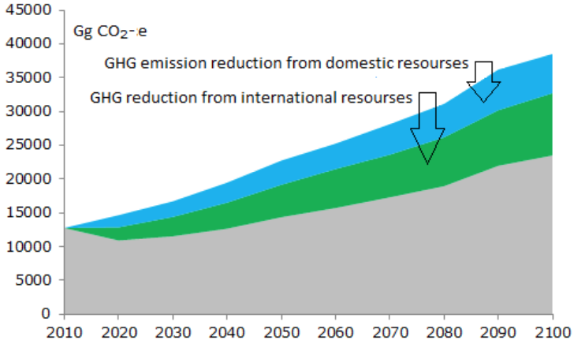
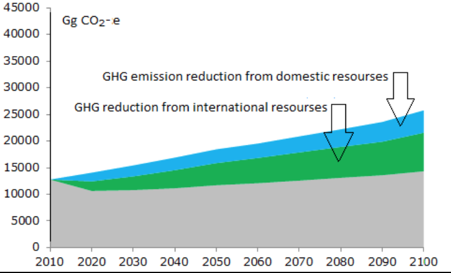

Climate change is the greatest challenge and the most universal objective for the humanity. This global problem requires the immediate consistent actions by the world community.
The Kyrgyz Republic belongs to the furthermost vulnerable countries to climate change, understands the importance of addressing the challenge and is making every effort to ensure that these initiatives are successful. Actions on climate change are reflected in the “National Sustainable Development Strategy of the Kyrgyz Republic for 2013-2017” and the “Program of the Kyrgyz Republic on Transition to Sustainable Development for 2013-2017.”
The Climate Change Coordination Commission (CCCC), headed by the First Vice Prime Minister of the Kyrgyz Republic, coordinates all the activities in the Kyrgyz Republic related to climate change. The CCCC is composed of all heads of key ministries and divisions, representatives of the civil, academic and business sectors.
Actions for adaptation to climate change are developed and included in the “Priorities for Adaptation to Climate Change in the Kyrgyz Republic till 2017”. The Kyrgyz Republic has developed the sectorial plans and programs for adaptation in all vulnerable sectors.
The Kyrgyz Republic’s greenhouse gases (GHG) emissions are relatively low. In 2010, the contribution of the country to the total global GHG emissions from fossil fuel combustion was 0.023%, while the population was 0.079% of the world’s total population, i.e. per capita GHG emission in the Kyrgyz Republic is less than one-third of the world average. However, the planned economic development will lead to a sharp increase in greenhouse gases emissions, which determines the need for resolute actions to reduce greenhouse gas emissions.
The intended nationally determined contribution is prepared in accordance with decisions of the Conference of the Parties to the UN Framework Convention on Climate Change (UNFCCC) 1 / CP.19 and 1 / CP.20.
For the Kyrgyz Republic, a mountainous country that has a high vulnerability to the impacts of climate change, the implementation of adaptation actions is vital [1].
| Sector | Losses[2], mln $2005 |
|---|---|
| Water resources | 718 |
| Agriculture | 70 |
| Energy | 200 |
| Emergencies | 38 |
| Healthcare | 110 |
| Forest and Biodiversity | 94.80 |
| Total: | 1230.80 |
The current assessment of economic losses is the lower bound, as a result of the specific national assessment methods. The revision of the methods is envisioned. Reduction of economic losses in the hydro energy sector will be reached through mitigation actions.
To prevent the climate change related damage and losses in the country.
213.40
1592.10
1937.50
135.60
1011.40
1230.80
The monitoring over implementation of the adaptation contribution will be combined with a process of regular updating of the national priorities and sectorial adaptation programs and action plans. Preparation of the updated programs and plans will be based on assessments of the earlier adaptation plans’ outcomes.
Limiting the per capita GHG emissions to maximum of 1.23 t/CO2, or 1.58 t/CO2 in 2050 to achieve the below 2°C objective, with a probability of 66% and 50% respectively.
Based on the IPCC and IEA developments in the context of the below 2°C objective, the target is communicated in CO2. For INDC monitoring, emission of other GHGs was accounted in CO2-eq (shown in Section 12).
January 1, 2020 - December 31, 2030, and 2050
Kyrgyz Republic will reduce GHG emissions in the range of 11.49 - 13.75% below BAU in 2030. Additionally, under the international support Kyrgyz Republic could implement the mitigation measures to achieve total reduction in the range of 29.00 - 30.89% below BAU in 2030.
Kyrgyz Republic will reduce GHG emissions in the range of 12.67 - 15.69% below BAU in 2050. Additionally, under the international support Kyrgyz Republic could implement the mitigation measures to achieve total reduction in the range of 35.06 - 36.75% below BAU in 2050.
Not used to determine the targets as they are indicated in per capita GHG emission. 2010 is taken for the emissions modeling.
Carbon dioxide (CO2 )
Methane (CH4)
Nitrous oxide (N2O)
Hydrofluorocarbons (HFCs)
Perfluorocarbons (PFCs)
Sulfur hexafluoride (SF6)
Nitrogen trifluoride (NF3)
Revised 1996 IPCC Guidelines for National Greenhouse Gas Inventories
Carbon dioxide - 1
Methane - 21
Nitrous oxide - 310
HFC-134a - 1300
Other GHGs emissions not relevant.
Model - SHAKYR (development of the Climate Change Centre of the Kyrgyz Republic).
To assess the potential mitigation actions to achieve the long term GHG emissions target, the following scenarios were developed:
The following estimates of population for 2050 (in thousands): Scenario 1 - 6872; Scenario 2 - 7975; Scenario 3 - 9170.
Figure below provides a graphical illustration of per capita emissions for the three scenarios.
| Total | Domestic efforts | International Support | ||||
|---|---|---|---|---|---|---|
| Resources cumulative ($2005, in millions) | GHG reduction annual (CO2 Gg) | Resources cumulative ($2005, in millions) | GHG reduction annual (CO2 Gg) | Resources cumulative ($2005, in millions) | GHG reduction annual (CO2 Gg) | |
| Scenario 1 | 1960 | 7403 | 733 | 2865 | 1227 | 4548 |
| Scenario 2 | 1630 | 5635 | 568 | 2070 | 1062 | 3575 |
| Scenario 3 | 1867 | 4463 | 686 | 2247 | 1181 | 2226 |
| 2020 | 2030 | 2050 | 2100 | ||
|---|---|---|---|---|---|
| Scenario 1 | Domestic efforts | 12,22 | 13,75 | 15,69 | 15,06 |
| International support | 13,14 | 17,04 | 21,06 | 23,91 | |
| Total | 25,36 | 30,89 | 36,75 | 38,92 | |
| Scenario 2 | Domestic efforts | 11,58 | 13,29 | 13,98 | 16,28 |
| International support | 12,70 | 16,66 | 22,53 | 28,12 | |
| Total | 24,27 | 29,96 | 36,51 | 44,31 | |
| Scenario 3 | Domestic efforts | 11,09 | 11,49 | 12,67 | 20,98 |
| International support | 12,76 | 17,51 | 21,98 | 20,78 | |
| Total | 23,86 | 29,00 | 35,06 | 41,66 |



Monitoring over implementation of the mitigation contribution will be combined with a process of regular updating of the national mitigation priorities, programs and action plans. Preparation of the updated programs and plans will be based on assessments of the earlier mitigation measures’ implementation.
The domestic MRV system will be developed and established as a basis for monitoring and reporting of the mitigation actions.
Reporting will also be carried out in the frames of the national communications on climate change and biennial update reports.
GHG emissions of the Kyrgyz Republic are small. In 2010, the share of the Republic in global GHG emissions from fossil fuel combustion was 0.023%. Per capita GHG emissions of the Kyrgyz Republic are less than one-third of the world average.
The low emissions of Kyrgyz Republic are largely because 90% of the total electricity generation is supplied by the hydroelectric power plants. However, the expected climate change impacts will decrease the water flow after the 30s and, consequently, reduce the hydropower resources potential. As a result, even with an annual GDP growth of 4%, the electricity demand for Kyrgyzstan’s economy would be much more that can be met through the hydropower capacities.
The Kyrgyz Republic is a lower middle income country with 637.3 pc income, compared to global average per capita income of 8054.6 (2014, $2005). To meet its development needs the economy is expected to grow and so will do the GHG emissions. The increase in GHG emissions is expected to be much faster than in the developed countries. Despite this, the long term vision of the Kyrgyz Republic is to limit the per capita GHG emissions to a very low level of 1.58 t CO2 in line with 2°C objective. Hence, the ambition and fairness of the national efforts, submitted in the INDC, is evident and equitable in the face of a sharp growth of the country’s economic level.
Priority Directions for Adaptation to Climate Change in the Kyrgyz Republic till 2017, sectorial Action Plans on adaptation to climate change in the Kyrgyz Republic, www.nature.gov.kg, www.climatechange.kg ↩
Annual losses under the temperature increase by 5°C relatively 1961-1990 level. ↩
Domestic costs hereinafter refer to resources within the funds allocated to ministries and institutions for the relevant year. ↩